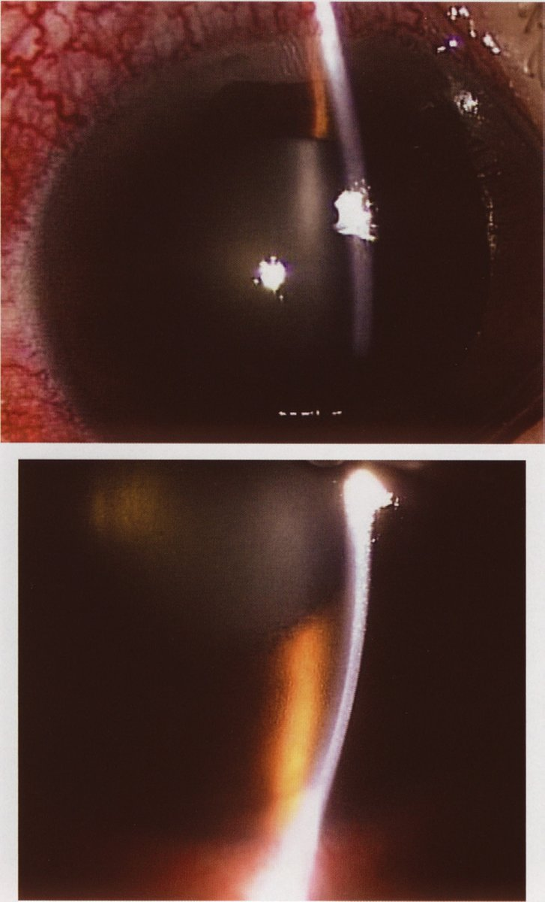
| 選択肢 | 解説 |
|---|---|
| ａ 縮瞳薬点眼 | ピロカルピンなどの副交感神経刺激薬は瞳孔括約筋を収縮させ、虹彩を薄く引き伸ばして隅角から引き剝がす。同時に毛様体筋の収縮が線維柱帯を広げるので、発作時の第一選択のひとつである。ただし眼圧が50mmHgを超えると虹彩括約筋が阻血で麻痺して縮瞳薬が効かないため、まず高浸透圧薬・炭酸脱水酵素阻害薬で眼圧を落としてから点眼する。 |
| ｂ 水晶体摘出術 | 高齢の遠視眼では加齢で厚みを増した水晶体が虹彩を前へ押し上げ、瞳孔ブロックの主因になっている。水晶体を摘出して薄い眼内レンズに置き換えれば前房が深くなり、隅角が構造的に開いて発作が根治する——本例は＋3.5Dの遠視眼＝もともと眼軸が短く前房が浅いので、水晶体摘出（PEA+IOL）はきわめて理に適った対応である。 |
| ◯ ｃ アトロピン点眼 | アトロピンは副交感神経遮断薬で、散瞳と毛様体麻痺を起こす。散瞳すると虹彩は瞳孔縁で厚く折り重なり、虹彩根部が隅角に詰め込まれて房水の出口を完全に塞ぐ——発作を悪化させ失明に直結するため、閉塞隅角緑内障に散瞳薬は禁忌である。これが「適切でない」対応であり本問の正解。 |
| ｄ 高浸透圧利尿薬点滴 | D-マンニトールや濃グリセリンを点滴すると血漿浸透圧が上がり、硝子体から水が引き抜かれて眼球容積が減る。数十分で眼圧が下がる即効性があり、発作時の中心的な処置である。腎不全・心不全では循環血漿量が増えるため慎重に使う。 |
| ｅ 炭酸脱水酵素阻害薬内服 | アセタゾラミドは毛様体無色素上皮の炭酸脱水酵素を阻害して房水産生そのものを減らす。発作時は内服または静注で用いる。副作用は代謝性アシドーシス・低K血症・四肢のしびれで、サルファ剤アレルギーと尿路結石の既往に注意する。 |
| 段階 | 手段 | 作用点 |
|---|---|---|
| ① 眼圧を落とす | 高浸透圧利尿薬点滴（D-マンニトール、濃グリセリン） 炭酸脱水酵素阻害薬（アセタゾラミド）内服・静注 | 硝子体の脱水／房水産生の抑制 |
| ② 隅角を開く | 縮瞳薬点眼（ピロカルピン） β遮断薬点眼 | 虹彩を引き伸ばして隅角から剝がす |
| ③ 再発を防ぐ（根治） | レーザー虹彩切開術〈LI〉 水晶体摘出術（PEA+IOL） 周辺虹彩切除術 | 後房と前房のバイパスを作る／ 水晶体因子を取り除く |
| 症状 | 意味するもの | 代表疾患 |
|---|---|---|
| 羞明・昼盲 | 中間透光体の光散乱 | 白内障（とくに後囊下）、角膜混濁、虹彩炎 |
| 光視症 | 硝子体による網膜の牽引 | 後部硝子体剝離、網膜裂孔、網膜剝離 |
| 飛蚊症 | 硝子体混濁の影 | 生理的、硝子体出血、ぶどう膜炎、網膜裂孔 |
| 変視症 | 黄斑の視細胞配列の乱れ | 加齢黄斑変性、黄斑上膜、黄斑円孔、中心性漿液性脈絡網膜症 |
| 夜盲 | 杆体の機能低下 | 網膜色素変性、ビタミンA欠乏、小口病 |
| 虹視症 | 角膜浮腫による光の回折 | 急性閉塞隅角緑内障、角膜内皮障害 |
| 視野欠損 | 網膜・視神経・視路の障害 | 緑内障、網膜剝離、脳血管障害、下垂体腫瘍 |
| 選択肢 | 解説 |
|---|---|
| ａ 羞 明 ――― 白内障 | 正しい組合せ。水晶体が混濁すると入ってきた光が散乱し、まぶしさ（羞明）と昼盲（明るい所ほど見えにくい）を生じる。とくに後囊下白内障で強い。 |
| ◯ ｂ 光視症 ――― 緑内障 | 誤りであり本問の正解。光視症は「暗い所で稲妻のような光が走る」自覚症状で、硝子体が網膜を機械的に引っぱることで生じる——代表は後部硝子体剝離・網膜裂孔・網膜剝離であり、飛蚊症の急増を伴えば緊急の眼底検査の適応である。緑内障は視神経の疾患で、症状は視野欠損（開放隅角では無自覚のことが多い）である。 |
| ｃ 変視症 ――― 加齢黄斑変性 | 正しい組合せ。変視症は「まっすぐな線が歪んで見える」症状で、黄斑（中心窩）の視細胞の配列が乱れることによる——加齢黄斑変性・中心性漿液性脈絡網膜症・黄斑上膜・黄斑円孔で生じる。簡便な検出法がAmsler チャートである。 |
| ｄ 夜 盲 ――― 網膜色素変性 | 正しい組合せ。網膜色素変性は杆体から障害される遺伝性網膜変性で、杆体は暗所視を担うため夜盲が初発症状になる。その後、周辺から輪状暗点 → 求心性視野狭窄と進む。夜盲はほかにビタミンA欠乏症・小口病でもみられる。 |
| ｅ 飛蚊症 ――― 裂孔原性網膜剝離 | 正しい組合せ。飛蚊症は「黒い点や糸くずが視線とともに動く」症状で、硝子体の混濁が網膜に影を落とすことによる——生理的なものも多いが、急に数が増えた飛蚊症は後部硝子体剝離に伴う網膜裂孔・硝子体出血のサインで、裂孔原性網膜剝離の前触れである。 |
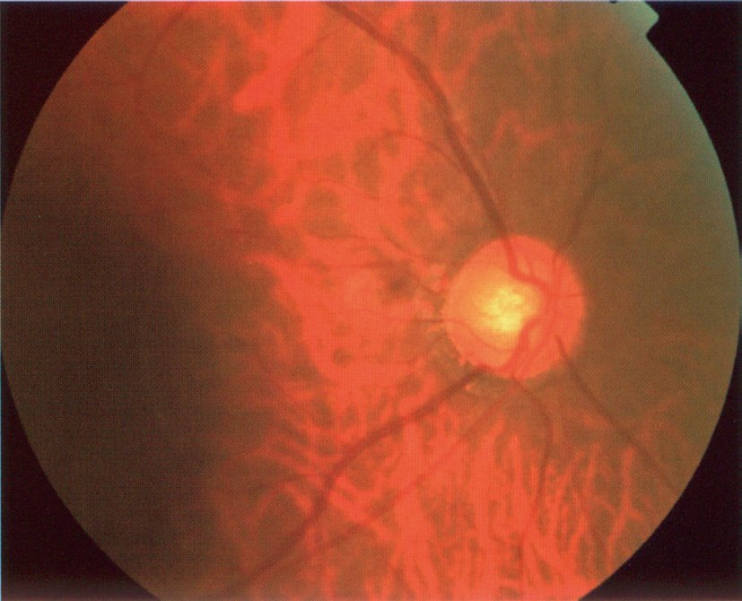
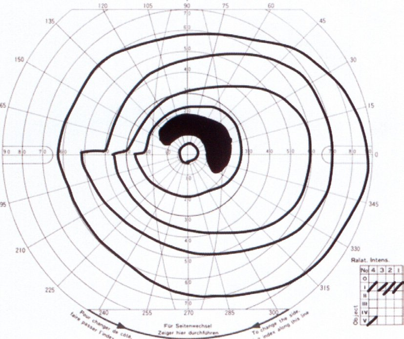
| 分類 | 代表薬 | 機序 | 注意 |
|---|---|---|---|
| プロスタグランディン関連薬 | ラタノプロスト | ぶどう膜強膜流出↑ | 色素沈着・睫毛伸長・DUES （全身副作用ほぼ無し＝第一選択） |
| β遮断薬 | チモロール | 房水産生↓ | 喘息・徐脈・心不全に禁忌 |
| 炭酸脱水酵素阻害薬 | ドルゾラミド | 房水産生↓ | 点眼は全身影響が小さい |
| α2刺激薬 | ブリモニジン | 産生↓＋流出↑ | 眠気・アレルギー性結膜炎 |
| Rhoキナーゼ阻害薬 | リパスジル | 線維柱帯流出↑ | 結膜充血 |
| 副交感神経刺激薬 | ピロカルピン | 縮瞳して隅角を開く | 閉塞隅角向け・暗黒感 |
| 選択肢 | 解説 |
|---|---|
| ａ 抗菌薬 | 感染性の結膜炎・角膜炎に用いる。本例は前眼部に異常が無く、充血も眼脂も無い＝感染を示す所見が一切ない。 |
| ｂ β遮断薬 | チモロールなどのβ遮断薬点眼は房水産生を抑える緑内障治療の基本薬だが、点眼薬でも鼻涙管から吸収されて全身に回る——β2受容体の遮断による気管支攣縮のため気管支喘息には禁忌である。本例は喘息重積で入院歴があり、現在も発作を繰り返している＝絶対に選んではいけない。ほかに徐脈・房室ブロック・心不全でも禁忌。 |
| ｃ 副交感神経刺激薬 | ピロカルピンは縮瞳させて隅角を開くので閉塞隅角には有効だが、本例は前房が深く隅角は開いている。縮瞳による暗黒感・近視化・毛様体痛のため長期の第一選択にはならない。 |
| ｄ 副腎皮質ステロイド薬 | ステロイド点眼はステロイド緑内障（線維柱帯の細胞外基質が増えて流出抵抗が上がる）を起こす——眼圧を上げる薬であり、緑内障には最も選んではいけない。喘息で全身ステロイドを使っている患者では、そもそも眼圧上昇のリスクがあることも押さえたい。 |
| ◯ ｅ プロスタグランディン関連薬 | ラタノプロスト等はぶどう膜強膜流出路からの房水排出を増やし、眼圧下降効果が最も大きいため現在の第一選択である。1日1回点眼でよく、全身性の副作用がほとんど無いので喘息・心疾患があっても使える——本例のようにβ遮断薬が禁忌の患者では明確な正解になる。局所副作用は虹彩・眼瞼の色素沈着、睫毛の伸長・多毛、上眼瞼溝深化〈DUES〉で、いずれも整容的問題である。 |
| 選択肢 | 解説 |
|---|---|
| ａ うっ血乳頭 | 頭蓋内圧亢進で視神経乳頭が腫脹する状態。視野の特徴はマリオット盲点の拡大で、長く続くと視神経萎縮に至って初めて視野狭窄が出る。「一過性の霧視（black out）はあるが視力は保たれる」のがうっ血乳頭の典型である。 |
| ｂ 頭蓋咽頭腫 | トルコ鞍上部から発生し視交叉を下方から圧迫する腫瘍——交叉する鼻側網膜線維が障害されるので両耳側半盲をきたす。下垂体腺腫と同じ視野障害だが、小児・若年に多く石灰化を伴う点が異なる。 |
| ｃ 加齢黄斑変性 | 黄斑（中心窩）が障害されるので中心暗点と変視症をきたす——周辺視野は保たれるため「真ん中が見えないが歩ける」状態になり、求心性狭窄とは真逆である。 |
| ｄ 球後視神経炎 | 視神経の乳頭より後方の炎症で、中心暗点（中心盲点暗点）・眼球運動時痛・RAPD陽性・眼底は正常（「患者も医者も何も見えない」）が特徴。多発性硬化症・視神経脊髄炎に伴う。 |
| ◯ ｅ 開放隅角緑内障 | 緑内障の視野障害は傍中心暗点・鼻側階段 → Bjerrum弓状暗点 → 上下の弓状暗点が輪状につながる → 中心と耳側だけが島状に残る（求心性視野狭窄）と進む——つまり末期の開放隅角緑内障は求心性視野狭窄になる。中心視力は最後まで保たれるため、視力1.0なのに一人で歩けないという乖離が起こる。 |
| 病期 | 視野 | 自覚 |
|---|---|---|
| 初期 | 傍中心暗点（固視点のすぐ脇） 鼻側階段（水平経線での段差） | まったく無い |
| 中期 | Bjerrum弓状暗点（盲点から弓状に伸びる） | ほぼ無い |
| 進行期 | 上下の弓状暗点がつながる輪状暗点 | ときに気付く |
| 末期 | 求心性視野狭窄（中心と耳側の島だけ残る） | 歩行障害・車の運転不可 |
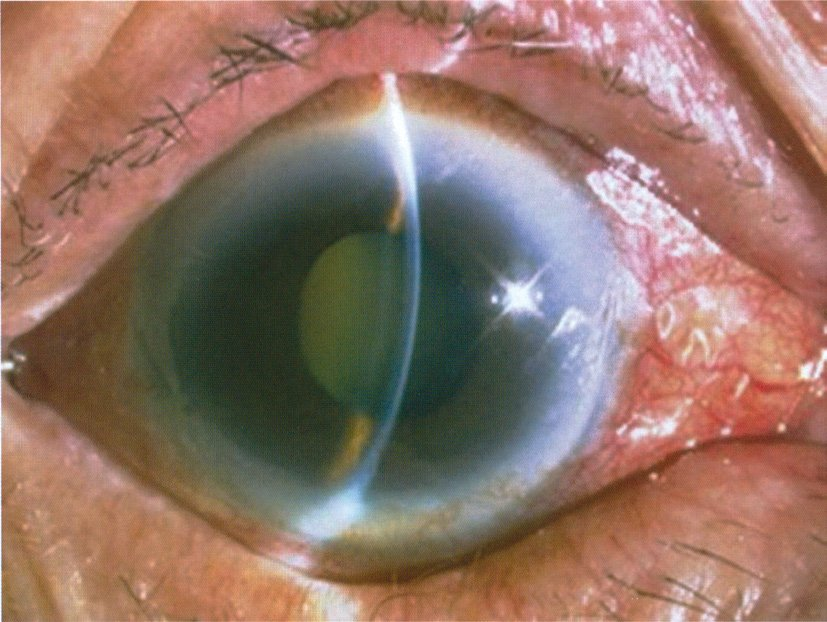
| 選択肢 | 解説 |
|---|---|
| ａ 経過観察 | 眼圧が高いまま数時間放置すると視神経が不可逆に障害され失明する——急性閉塞隅角緑内障発作は眼科救急のなかでも最も時間が惜しい病態で、経過観察は許されない。 |
| ｂ 抗菌薬点眼 | 結膜炎・角膜感染症の治療であり、本例には感染を示す眼脂も角膜浸潤も無い。充血は毛様充血（角膜輪部が濃い）で、結膜炎の結膜充血（周辺が濃い）とは分布が違う。 |
| ◯ ｃ 縮瞳薬点眼 | ピロカルピン点眼で瞳孔括約筋を収縮させると虹彩が薄く引き伸ばされて隅角から剝がれ、房水の出口が開く——同時に毛様体筋の収縮が線維柱帯を牽引して流出を助ける。実際には高浸透圧利尿薬・炭酸脱水酵素阻害薬と同時併行で行い、眼圧が下がってからレーザー虹彩切開術か水晶体摘出術で根治する。選択肢のなかで唯一「隅角を開く方向」に働く。 |
| ｄ 眼球マッサージ | 網膜中心動脈閉塞症で塞栓を末梢へ押し流す目的に行う手技である——網膜中心動脈閉塞症は無痛性の突然の視力低下で、眼底にcherry-red spotをみる（本例と痛みの有無で区別できる）。高眼圧の眼を圧迫しても隅角は開かない。 |
| ｅ グルココルチコイド内服 | ステロイドは眼圧をさらに上げる方向に働く（ステロイド緑内障）。巨細胞性動脈炎による虚血性視神経症など「痛み＋視力低下」の別疾患には有効だが、本例は眼球が硬い＝高眼圧が明らかで適応が違う。 |
| 疾患 | 痛み | 眼圧 | 瞳孔 | 決め手 |
|---|---|---|---|---|
| 急性閉塞隅角緑内障発作 | 激痛＋頭痛・嘔吐 | 著明高値 | 中等度散大・固定 | 角膜浮腫・浅前房・毛様充血 |
| 網膜中心動脈閉塞症 | 無痛 | 正常 | RAPD陽性 | cherry-red spot・眼球マッサージ |
| 急性虹彩毛様体炎 | 中等度＋羞明 | 正常〜低下 | 縮瞳・後癒着 | 前房内細胞・角膜後面沈着物 |
| 細菌性角膜潰瘍 | 強い＋異物感 | 正常 | 正常 | 角膜浸潤・前房蓄膿・眼脂 |
| 視神経炎 | 眼球運動時痛 | 正常 | RAPD陽性 | 中心暗点・眼底正常 |
| 選択肢 | 解説 |
|---|---|
| ◯ ａ 隅角検査 | Goldmann三面鏡などで隅角を観察し、開放隅角か閉塞隅角か、続発緑内障を示す所見（血管新生・色素沈着・周辺虹彩前癒着）が無いかを見る——緑内障は病型で治療がまったく違うので、隅角の評価は診断の必須項目である。開放隅角なら点眼薬、閉塞隅角ならレーザー虹彩切開術や水晶体摘出、血管新生緑内障なら原疾患（糖尿病網膜症・網膜中心静脈閉塞症）の治療が要る。 |
| ｂ 色覚検査 | 先天色覚異常や視神経疾患（優性遺伝性視神経萎縮、中毒性視神経症）の評価に用いる。緑内障でも進行例で色覚異常が出うるが、診断や病型判定には寄与せず「まず行う」検査ではない。 |
| ◯ ｃ 視野検査 | 緑内障の診断は「視神経乳頭・網膜神経線維層の形態異常」と「それに対応する視野障害」の一致で確定する——乳頭陥凹拡大だけでは生理的大陥凹（もともと乳頭が大きい人）と区別できない。静的自動視野計（Humphrey）で傍中心暗点・鼻側階段・弓状暗点を探し、以後は進行の判定にも同じ検査を繰り返す。 |
| ｄ Hess赤緑試験 | 両眼の眼球運動のずれを定量する検査で、眼球運動障害・複視（外眼筋麻痺、甲状腺眼症、眼窩底骨折）の評価に用いる。緑内障とは無関係である。 |
| ｅ 網膜電図検査〈ERG〉 | 網膜の視細胞〜双極細胞の電気活動を記録する検査で、網膜色素変性・中心動脈閉塞症・硝子体出血で眼底が見えないときに用いる。緑内障は網膜神経節細胞の病気で、通常のERGはほぼ正常のため診断に使えない。 |
| 生理的大陥凹 | 緑内障 | |
|---|---|---|
| リムの厚み | ISNT則を保つ | 上下極が菲薄化・切痕 |
| NFLD | 無い | くさび状の欠損 |
| 乳頭出血 | 無い | あれば進行のサイン |
| 視野 | 正常 | 対応する欠損あり |
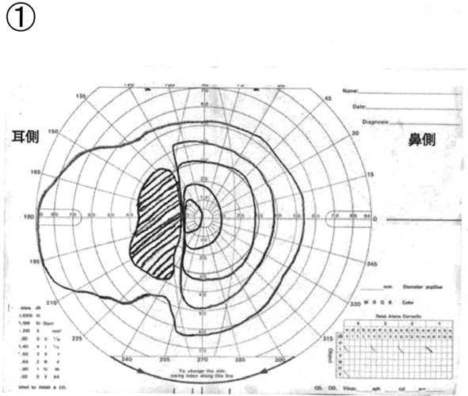
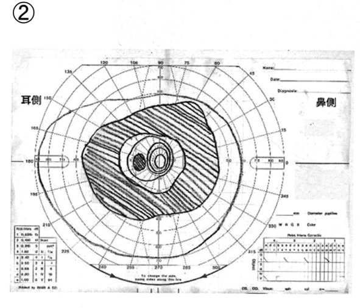
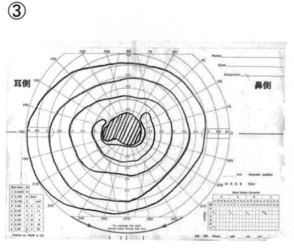
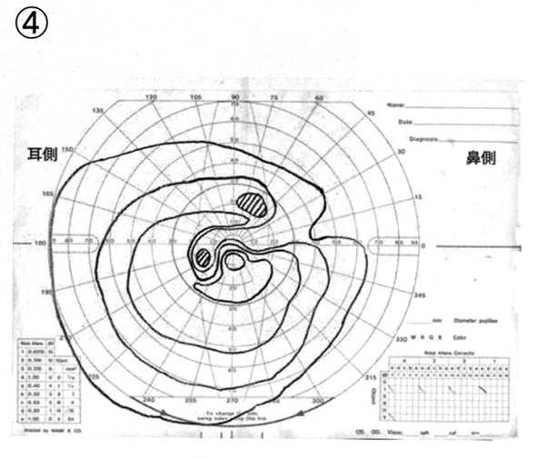
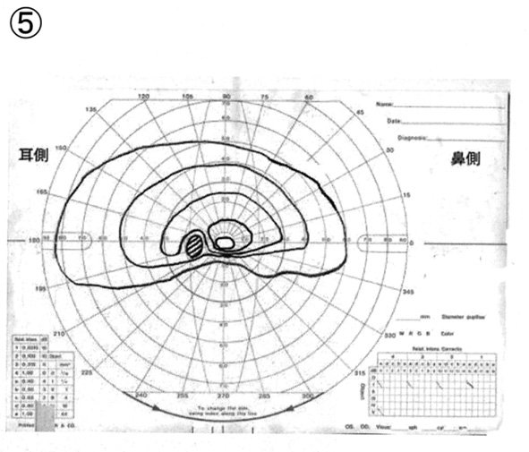
| 視野の形 | 障害部位 | 代表疾患 |
|---|---|---|
| 弓状暗点＋鼻側階段 | 乳頭上下極の弓状線維束 | 緑内障 |
| 中心暗点 | 黄斑・乳頭黄斑線維束 | 加齢黄斑変性、球後視神経炎 |
| 盲点の拡大 | 視神経乳頭の腫脹 | うっ血乳頭、視神経乳頭炎 |
| 水平半盲 | 乳頭の上半または下半の虚血 | 虚血性視神経症、網膜分枝動脈閉塞 |
| 両耳側半盲 | 視交叉 | 下垂体腺腫、頭蓋咽頭腫 |
| 同名半盲 | 視索より後方 | 脳梗塞、脳腫瘍 |
| 選択肢 | 解説 |
|---|---|
| ａ ① | 固視点より耳側に、縦に長い大きな暗点が1つある＝マリオット盲点の拡大である——生理的盲点（視神経乳頭に相当し、左眼では耳側15°にある）がそのまま膨らんだ形で、うっ血乳頭など乳頭が腫脹する病態を示す。緑内障では盲点は「拡大する」のではなく盲点から弓状に暗点が伸びる点が違う。 |
| ｂ ② | 固視点を中心に視野の大部分を覆う広大な暗点があり、周辺だけがかろうじて残っている——高度に進行した黄斑・視神経疾患の像で、中心視力が失われるのが特徴である。緑内障は中心視野が最後まで残るためこの形にはならない。 |
| ｃ ③ | 固視点を含む中心暗点で、周辺のイソプター（等感度曲線）は正常に保たれている——球後視神経炎・加齢黄斑変性・黄斑円孔など「中心を担う部分」の障害を示す。視力低下と変視症が主訴になり、無症状で進む緑内障とは臨床像も異なる。 |
| ◯ ｄ ④ | 盲点の位置から上方へ弓状に伸びる暗点（Bjerrum弓状暗点）があり、イソプターは鼻側の水平経線で段差（鼻側階段）を作っている——これが原発開放隅角緑内障の典型的視野である。乳頭の上下極に入る神経線維束が黄斑を避けて弓状に走るため、欠損もその走行をなぞって弓形になる。固視点（中心視野）は保たれている点も緑内障らしさの決め手で、だから視力1.0のまま進行する。 |
| ｅ ⑤ | 水平経線を境に下方の視野が広く失われている（水平半盲・altitudinal defect）——視神経乳頭の上半分に入る血流が絶たれる虚血性視神経症〈AION〉や網膜分枝動脈閉塞症の像である。緑内障の弓状暗点も上下どちらかに偏るが、盲点から弓状に伸びて鼻側階段を作る点で区別する。 |
| 結膜充血 | 毛様充血 | |
|---|---|---|
| 濃い場所 | 円蓋部（輪部から遠い） | 角膜輪部（輪部を囲む） |
| 色 | 鮮紅色 | 紫紅色・暗赤色 |
| 血管の見え方 | 樹枝状で個々が追える | 放射状・びまん性で個々を追えない |
| 結膜を動かすと | 血管も動く | 動かない（深層のため） |
| 血管収縮薬 | 消退する | 消退しにくい |
| 代表疾患 | 結膜炎、アレルギー | 急性緑内障発作、虹彩毛様体炎、角膜炎、強膜炎 |
| 選択肢 | 解説 |
|---|---|
| ａ 結膜炎 | 結膜炎では結膜充血（浅層の結膜血管の拡張）をきたす——角膜輪部から離れた円蓋部側ほど赤く、血管は樹枝状に走り、眼球を綿棒で動かすと血管も一緒に動く。血管収縮薬点眼で速やかに消退する点も毛様充血と違う。 |
| ｂ 加齢黄斑変性 | 黄斑部に脈絡膜新生血管やドルーゼン・萎縮が生じる疾患で、症状は変視症・中心暗点・視力低下である。外眼部は正常で充血しない。 |
| ｃ 網膜色素変性 | 杆体から障害される遺伝性網膜変性で、夜盲・輪状暗点・求心性視野狭窄が三徴である。眼底に骨小体様色素沈着・網膜血管狭細・視神経乳頭の蠟様蒼白をみるが、外眼部は正常で充血しない。 |
| ｄ 正常眼圧緑内障 | 眼圧が21mmHg以下のまま緑内障性視神経症が進む病型で、日本人の緑内障の大半を占める——慢性・無症状で、充血も痛みも無い。「緑内障」の語に引かれて選ばないこと。毛様充血をきたすのは急性発作の方である。 |
| ◯ ｅ 急性閉塞隅角緑内障発作 | 眼圧が急上昇すると角膜輪部を取り巻く毛様体・虹彩を養う深部血管（前毛様動脈系）がうっ滞して拡張する＝毛様充血である——角膜の縁がぐるりと濃い紫紅色になり、輪部から離れるほど薄くなるのが特徴である。毛様充血は「眼球の中に炎症・高眼圧がある」サインで、急性緑内障発作・虹彩毛様体炎・角膜炎・強膜炎で生じる＝いずれも視力予後に関わる重い病態である。 |
| 疾患 | 充血 | 視力 | 痛み | 瞳孔 |
|---|---|---|---|---|
| 結膜炎 | 結膜充血 | 正常 | 異物感 | 正常 |
| 急性閉塞隅角緑内障 | 毛様充血 | 高度低下 | 激痛 | 中等度散大・固定 |
| 虹彩毛様体炎 | 毛様充血 | 軽度低下 | 羞明・鈍痛 | 縮瞳・後癒着で不正 |
| 角膜炎・角膜潰瘍 | 毛様充血 | 低下 | 強い | 正常 |
| 結膜下出血 | べったりした出血斑 | 正常 | 無痛 | 正常 |
| 選択肢 | 解説 |
|---|---|
| ◯ ａ 傍中心暗点 | 固視点から10°以内、Bjerrum領域に現れる小さな暗点で、緑内障で最も早期に出る視野異常のひとつである——乳頭上下極の弓状線維束のうち黄斑近くを通る線維が脱落して生じる。中心のすぐ脇なのに本人はまったく気付かない（もう一方の眼と脳が埋めてしまう）。 |
| ｂ 視力低下 | 緑内障で最後まで残るのが中心視野＝視力である——弓状線維束が黄斑を避けて走るため、視野が大きく欠けても視力1.0が保たれる。視力が落ちるのは末期で、初期の所見としては誤りである（本問の正答率36%はここでの取り違えが多い）。 |
| ｃ 角膜浮腫 | 角膜内皮のポンプ能を上回る急激な高眼圧で生じる所見で、急性閉塞隅角緑内障発作の像である。開放隅角緑内障は眼圧上昇が緩徐で角膜内皮が代償するため、眼圧30mmHg台でも角膜は清明なことが多い。 |
| ｄ 虹彩萎縮 | 高眼圧による虹彩の阻血の結果生じる所見で、急性発作を起こした後（発作後）に色素脱失・瞳孔散大固定・緑内障斑（水晶体前囊の白色混濁）とともにみられる。開放隅角緑内障の初期には起こらない。 |
| ◯ ｅ 神経線維束欠損 | 網膜神経線維層欠損〈NFLD〉は視野異常より先に現れることがある最早期の他覚所見である——無赤色光眼底写真やOCTで乳頭から扇状（くさび状）に伸びる暗い帯として見える。対応する部位に後から傍中心暗点・弓状暗点が出るので、「形態異常が先、視野異常が後」という緑内障の進み方そのものを表す。 |
| 原発開放隅角緑内障 | 急性閉塞隅角緑内障発作 | |
|---|---|---|
| 経過 | 年単位で緩徐 | 数時間で急激 |
| 自覚症状 | 無い | 眼痛・頭痛・悪心嘔吐・虹視 |
| 眼圧 | 正常〜軽度高値（NTGは21以下） | 40〜80mmHg |
| 前房 | 深い | 浅い・虹彩膨隆 |
| 角膜 | 清明 | 浮腫でびまん性に混濁 |
| 瞳孔 | 正常 | 中等度散大・対光反射消失 |
| 充血 | 無し | 毛様充血 |
| 初期所見 | NFLD・傍中心暗点・鼻側階段 | 上記の急性所見一式 |
| 治療 | 点眼（PG関連薬が第一選択） | 眼圧下降→LIまたは水晶体摘出 |
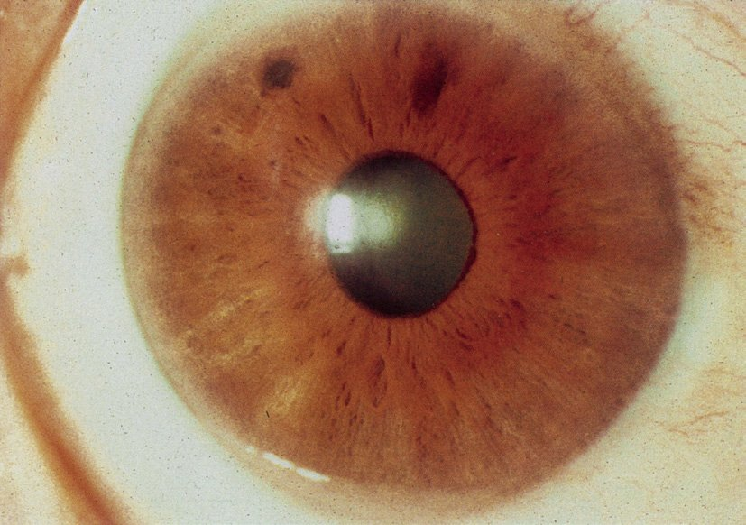
| 選択肢 | 解説 |
|---|---|
| ａ 抗菌薬点眼 | 感染を疑う所見（眼脂・角膜浸潤・前房蓄膿）が無く、「2時間で症状が改善する」ような即効性も無い。 |
| ｂ 散瞳薬点眼 | 閉塞隅角緑内障に散瞳薬は禁忌である——散瞳すると虹彩根部が隅角に詰め込まれて房水の出口がさらに塞がり、発作を悪化させる。 |
| ｃ β遮断薬経口投与 | β遮断薬は点眼で房水産生を抑える緑内障治療薬だが、経口投与は緑内障治療として行わない——全身の徐脈・血圧低下・気管支攣縮を招くだけで、発作時に2時間で眼圧を落とす力も無い。 |
| ◯ ｄ 浸透圧利尿薬点滴 | D-マンニトールや濃グリセリンの点滴は血漿浸透圧を上げて硝子体から水を引き抜き、数十分〜2時間で眼圧を劇的に下げる——「処置をして2時間後に症状の改善」という時間経過に合致するのはこの薬だけである。実際には炭酸脱水酵素阻害薬・縮瞳薬点眼と併用し、眼圧が下がって角膜浮腫が引いてからレーザー虹彩切開術〈LI〉で根治する——これが「レーザーを用いた再発予防手術」である。 |
| ｅ 副腎皮質ステロイド点滴 | ステロイドは眼圧を上げる方向に働く（ステロイド緑内障）。ぶどう膜炎や視神経炎には有効だが、高眼圧発作の第一選択にはならない。 |
| 薬 | 投与 | 効果発現 | 機序 |
|---|---|---|---|
| D-マンニトール 濃グリセリン | 点滴静注 | 30分〜1時間 （最も速く強い） | 血漿浸透圧↑で硝子体を脱水 |
| アセタゾラミド | 静注・内服 | 15分〜1時間 | 房水産生↓ |
| ピロカルピン | 点眼 | 30分（高眼圧では効きにくい） | 縮瞳して隅角を開く |
| β遮断薬 | 点眼 | 1〜2時間 | 房水産生↓ |
| 選択肢 | 解説 |
|---|---|
| ａ 眼瞼下垂 | 動眼神経麻痺・重症筋無力症・Horner症候群・腱膜性眼瞼下垂などで生じる。高眼圧そのものは眼瞼挙筋を障害しない——ただし「痛み＋瞳孔散大」から動眼神経麻痺（内頸動脈-後交通動脈瘤）を鑑別に挙げること自体は正しい発想で、その場合は眼瞼下垂と眼球運動障害を伴い眼圧は正常である。 |
| ｂ 縮 瞳 | 急性閉塞隅角緑内障発作では高眼圧による虹彩括約筋の阻血・麻痺で中等度散瞳（4〜6mm）し、対光反射が消失する——縮瞳は正反対であり、虹彩毛様体炎（ぶどう膜炎）の所見である。毛様充血をきたす点は両者に共通するので、瞳孔径で分けるのが定石である。 |
| ◯ ｃ 角膜浮腫 | 眼圧55mmHgは角膜内皮のポンプ機能（房水を汲み出して角膜を脱水に保つ働き）を上回るため、角膜実質と上皮に水が溜まってすりガラス様にびまん性混濁する——これが霧視と、光源の周りに虹の輪が見える虹視症の正体である。視力0.05（矯正不能）も角膜浮腫による中間透光体の混濁でよく説明できる。 |
| ｄ 眼底出血 | 網膜静脈閉塞症・糖尿病網膜症・高血圧性網膜症などでみられる所見である。急性発作では角膜浮腫のため眼底自体が透見できないことが多く、出血は本態でもない。 |
| ｅ うっ血乳頭 | 頭蓋内圧亢進による両眼性の視神経乳頭腫脹である——「激しい頭痛＋嘔吐」から頭蓋内疾患を連想させるひっかけだが、うっ血乳頭は両眼性で視力は保たれ、眼圧は正常である。本例は片眼性で眼圧55mmHgと明確に異常であり、頭痛と嘔吐は高眼圧による三叉神経・迷走神経刺激で説明できる。 |
| 疑う疾患 | 眼所見 | 決め手 |
|---|---|---|
| 急性閉塞隅角緑内障 | 片眼の毛様充血・角膜浮腫・散瞳 | 眼圧著明高値・眼球が硬い |
| くも膜下出血 | 正常（うっ血乳頭・硝子体出血のことも） | 突発する最悪の頭痛・項部硬直・頭部CT |
| 片頭痛 | 正常 | 拍動性・反復性・閃輝暗点の前兆 |
| 急性胃腸炎 | 正常 | 下痢・発熱・接触歴 |
| 選択肢 | 解説 |
|---|---|
| ａ 網膜電図 | 網膜の視細胞〜双極細胞の電気活動を記録する検査で、網膜色素変性や、中間透光体の混濁で眼底が見えないときの網膜機能評価に用いる。急性発作の診断には結び付かず、角膜浮腫のある痛む眼に電極を乗せる検査でもない。 |
| ◯ ｂ 眼圧検査 | 毛様充血・角膜浮腫・散瞳という急性閉塞隅角緑内障発作の3所見が揃っており、これを確定するのは眼圧の測定である——発作では40〜80mmHgに達する。角膜浮腫があると接触型（Goldmann圧平眼圧計）の測定値は不安定になるため非接触型や反跳式を使うが、いずれにせよ数値を出すことが診断・治療開始の根拠になる。器械が無ければ閉瞼させて指で触れ、左右差をみるだけでも「明らかに硬い」ことが分かる。 |
| ｃ 頭部CT検査 | 「頭痛＋悪心」からくも膜下出血を除外したくなるが、眼所見（毛様充血・角膜浮腫・散瞳）が片眼に揃っている時点で眼疾患が濃厚である——CTを撮っている間に視神経が不可逆に傷むので、先に眼圧を測るのが正しい順序である。 |
| ｄ 眼部超音波検査 | 中間透光体が混濁して眼底が見えないときに網膜剝離・硝子体出血・眼内腫瘍を評価する検査である。痛む高眼圧の眼にプローブを当てる侵襲もあり、本例で最初に選ぶ検査ではない。 |
| ｅ 光干渉断層計〈OCT〉 | 黄斑・視神経乳頭の断層像を非接触で得る検査で、黄斑疾患の評価や慢性緑内障の網膜神経線維層厚の定量に威力を発揮する。ただし角膜が浮腫で濁っていると測定できないし、急性発作の緊急診断には使わない。 |
| 測定法 | 特徴 | 適する場面 |
|---|---|---|
| Goldmann圧平眼圧計 | 細隙灯に装着・点眼麻酔が要る標準法 | 外来での基準測定 |
| 非接触型（空気） | 麻酔不要・感染リスクが低い | 検診・スクリーニング |
| 反跳式（アイケア） | 小型・小児や臥床患者にも可 | 往診・小児・救急 |
| 指による触診 | 器械不要・左右差で判定 | 器械の無い現場での発作の疑い |
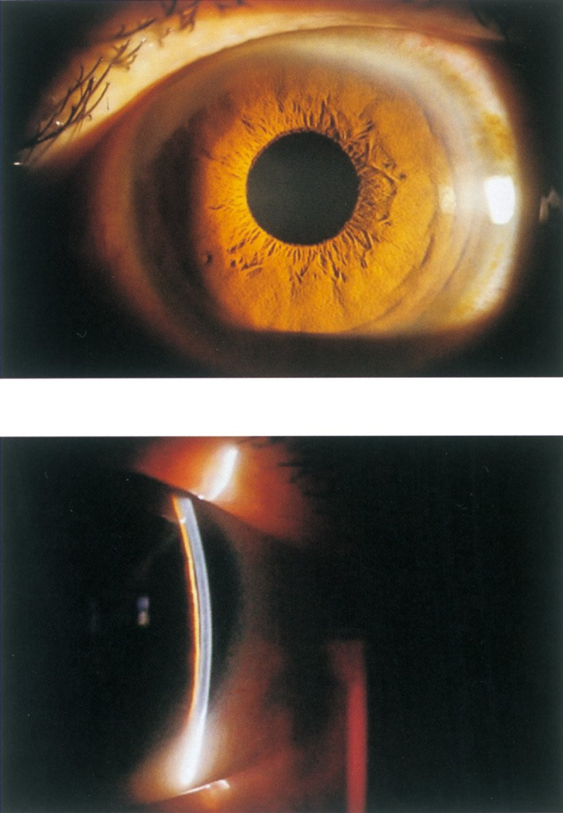
| 選択肢 | 解説 |
|---|---|
| ａ アトロピン点眼 | 散瞳薬は虹彩根部を隅角に押し込むため閉塞隅角には禁忌である——本例のような間欠的な発作を本格的な急性発作に転じさせる。 |
| ｂ 副腎皮質ステロイド点眼 | 炎症所見（前房内細胞・角膜後面沈着物・毛様充血）が無く適応が無い。むしろステロイド緑内障で眼圧を上げる。 |
| ｃ 高浸透圧利尿薬点滴 | 眼圧を急速に下げる急性発作時の処置である——本例の眼圧は右19・左24mmHgで現時点では発作を起こしておらず、点滴の適応にはならない。問われているのは「今後発作を起こさないための対応」である。 |
| ◯ ｄ レーザー虹彩切開術 | 写真は浅前房を示している——上段の前眼部像で虹彩が前方に張り出し、下段のスリット断面では角膜と虹彩・水晶体前面の隙間が極端に狭い。＋2.5〜3.0Dの遠視眼（眼軸が短い）で68歳＝水晶体が厚くなる年代、眼痛・虹視・頭痛を反復——これは原発閉塞隅角症／間欠性の閉塞隅角緑内障の典型像である。虹彩に孔をあけて後房と前房のバイパスを作れば瞳孔ブロックが解除され、大発作を予防できる。白内障が進んでいれば水晶体摘出術も同等の選択肢になる。 |
| ｅ 硝子体手術 | 網膜剝離・黄斑円孔・硝子体出血・増殖糖尿病網膜症などの後眼部疾患に対する手術である。本例の病変は前房・隅角＝前眼部にあり適応が違う。 |
| 方法 | やり方 | 判定 |
|---|---|---|
| van Herick法 | 角膜輪部でスリット光を当て、周辺前房深度と角膜厚を比べる | 角膜厚の1/4未満なら閉塞の危険 |
| 隅角検査（Goldmann三面鏡） | 鏡で隅角を直接観る | 線維柱帯が見えるか＝Shaffer分類 |
| 前眼部OCT・超音波生体顕微鏡〈UBM〉 | 非接触・断層像 | 隅角開大度を定量 |
| ペンライト法 | 耳側から光を当てる | 鼻側虹彩が影になれば浅前房 |
| 選択肢 | 解説 |
|---|---|
| ａ 調節検査 | 老視や調節麻痺・調節緊張の評価に用いる検査である。乳頭陥凹拡大の精査とは無関係である。 |
| ◯ ｂ 視野検査 | 緑内障の診断は「乳頭・網膜神経線維層の形態異常」と「対応する視野障害」の一致で決まる——乳頭陥凹拡大を指摘された患者に対してまず行うのは視野検査である。生理的大陥凹との区別も、最終的には視野異常の有無で付く。加えて本例は「悪心を伴う頭痛＋霧視」を繰り返しており間欠性の閉塞隅角発作が疑われるので、視野とあわせて眼圧・隅角も評価することになる。 |
| ｃ 頭部MRI | 「頭痛」の語につられやすいが、本例の頭痛は悪心を伴い霧視と同時に起こる＝眼圧上昇による症状として説明できる。頭蓋内病変なら視野は半盲型になり、片眼の乳頭陥凹拡大は説明できない。まず眼科的評価を行い、それで説明が付かないときにMRIへ進む。 |
| ｄ 涙液分泌検査 | Schirmer試験によるドライアイの評価である。主訴とも所見とも無関係である。 |
| ｅ 散瞳後眼底検査 | 乳頭の観察には有用だが、本例は間欠性の閉塞隅角発作が疑われる（悪心を伴う頭痛＋霧視の反復）——この状態で安易に散瞳すると急性発作を誘発しうる。散瞳する前には前房深度と隅角の確認が必要で、「まず行うべき検査」としては危うい。 |
| 散瞳前に確認 | 危険と判断したら |
|---|---|
| 前房深度（van Herick法） 隅角検査 遠視の有無・年齢 | 散瞳を避ける／ 先にレーザー虹彩切開術を行う／ 散瞳するなら短時間作用型を最小限で、 検査後に眼圧を再検する |
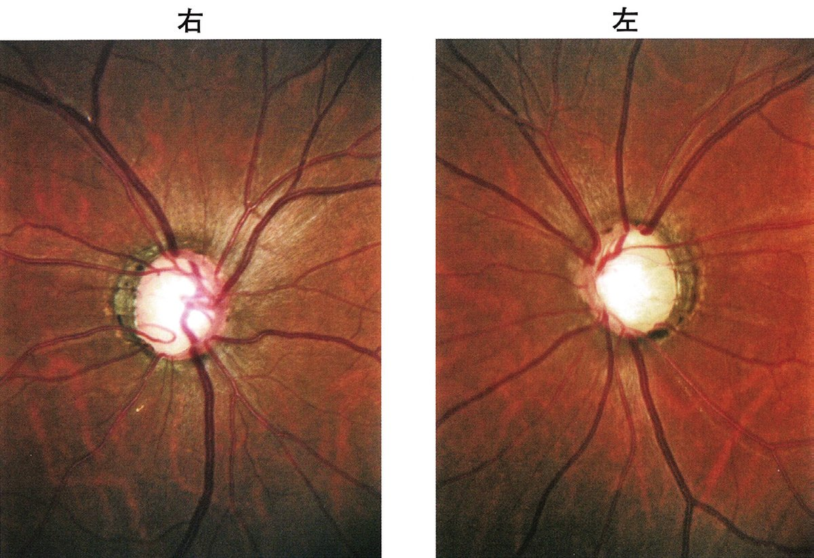
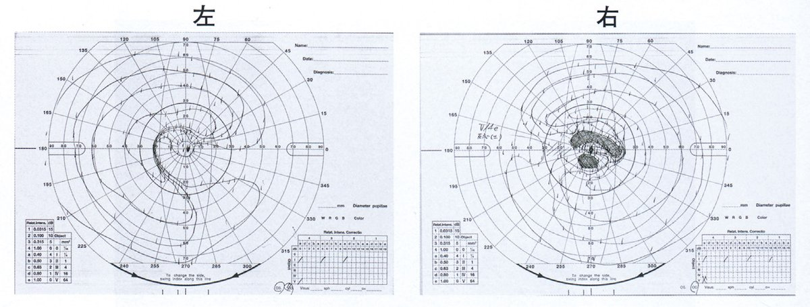
| 選択肢 | 解説 |
|---|---|
| ａ 縮瞳薬 | ピロカルピンは縮瞳させて隅角を開く薬で、閉塞隅角に用いる——本例は「前房は深く、清明」と明記され開放隅角であるから機序が合わない。暗黒感・近視化・毛様体痛の副作用も強い。 |
| ｂ 抗菌薬 | 感染性の外眼部疾患に用いる薬で、角膜は清明・前房も清明＝感染所見が無い。 |
| ｃ β遮断薬 | 房水産生を抑える有効な薬だが、気管支喘息には禁忌である——点眼液は鼻涙管から吸収されて全身に回り、β2遮断による気管支攣縮を起こす。さらに本例は閉塞性動脈硬化症もあり、β遮断薬は末梢循環をさらに悪化させる（間欠性跛行の増悪）——二重の理由で避ける。 |
| ｄ 副腎皮質ステロイド | ステロイド点眼は線維柱帯の細胞外基質を増やして流出抵抗を上げ、ステロイド緑内障を起こす——緑内障の治療としては最悪の選択である。 |
| ◯ ｅ プロスタグランディン関連薬 | ラタノプロスト等はぶどう膜強膜流出路からの排出を増やし、眼圧下降効果が最大かつ全身副作用がほとんど無い——喘息にも閉塞性動脈硬化症にも安全に使えるため、本例の第一選択になる。1日1回夜の点眼で、副作用は虹彩・眼瞼の色素沈着、睫毛の伸長・多毛、上眼瞼溝深化〈DUES〉など局所のものに限られる。 |
| 病歴にある全身疾患 | 避ける薬 | 理由 |
|---|---|---|
| 気管支喘息・COPD | β遮断薬 | β2遮断で気管支攣縮 |
| 徐脈・房室ブロック・心不全 | β遮断薬 | 陰性変時・変力作用 |
| 閉塞性動脈硬化症・Raynaud | β遮断薬 | 末梢循環障害の増悪 |
| サルファ剤アレルギー・尿路結石 | 炭酸脱水酵素阻害薬 | アレルギー・結石リスク |
| 妊娠 | PG関連薬 | 子宮収縮の理論的懸念 |
| ぶどう膜炎・無水晶体眼 | PG関連薬（慎重） | 囊胞様黄斑浮腫の誘発 |
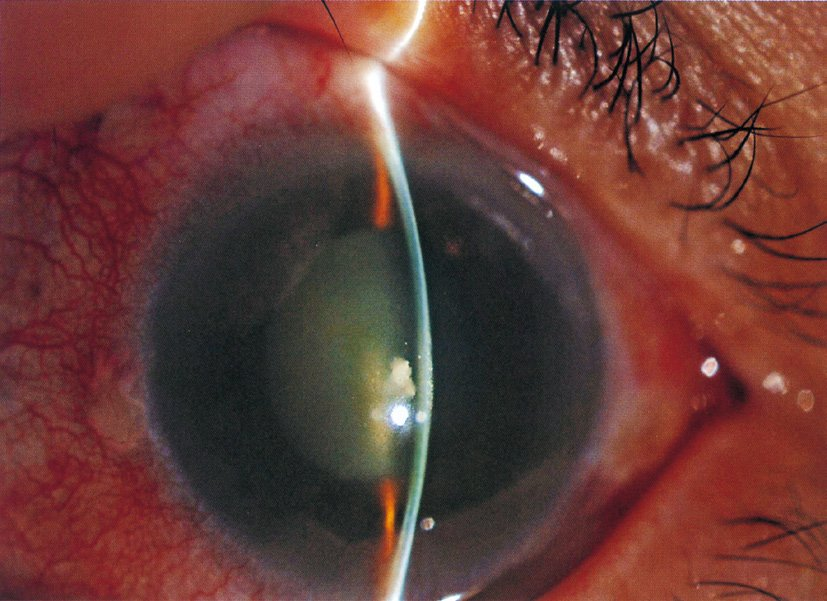
| 選択肢 | 解説 |
|---|---|
| ａ アトロピンの点眼 | 散瞳薬は閉塞隅角緑内障に禁忌である——虹彩根部を隅角に押し込んで房水の出口を塞ぎ、発作を決定的に悪化させる。 |
| ｂ 副腎皮質ステロイドの点滴 | ステロイドは眼圧を上げる方向に働く。視神経炎や巨細胞性動脈炎による虚血性視神経症には有効だが、本例は角膜浮腫・浅前房という高眼圧の所見が明らかで適応が違う。 |
| ◯ ｃ レーザー虹彩切開術 | 写真は角膜のびまん性浮腫（青灰色の混濁）、毛様充血、スリット断面でみる著明な浅前房を示し、急性閉塞隅角緑内障発作である。薬で眼圧を下げただけでは浅前房という解剖が残るので必ず再発する——虹彩に孔をあけて後房と前房のバイパスを作り瞳孔ブロックを根本から解除するのがレーザー虹彩切開術で、選択肢のなかで唯一の根治的治療である。実際には高浸透圧利尿薬・炭酸脱水酵素阻害薬・縮瞳薬でまず眼圧を下げ、角膜浮腫が引いてレーザーが虹彩に届くようになってから行う。 |
| ｄ 汎網膜光凝固 | 増殖糖尿病網膜症・網膜静脈閉塞症の虚血網膜を凝固して血管新生を抑える治療である。血管新生緑内障の予防・治療にも用いるが、本例は血管新生ではなく瞳孔ブロックによる発作である。 |
| ｅ 硝子体手術 | 網膜剝離・黄斑円孔・硝子体出血など後眼部の疾患に対する手術である。本例の病変は隅角＝前眼部にある。 |
| 写っているもの | 意味 |
|---|---|
| 角膜が全体に青灰色に曇る | 角膜浮腫——高眼圧が内皮ポンプを上回った。霧視と虹視症の原因 |
| 角膜輪部を囲む濃い充血 | 毛様充血——眼内の高眼圧・炎症のサイン |
| スリット光の2本の帯が接近 | 浅前房——角膜と虹彩・水晶体前面の距離が短い |
| 瞳孔が中等度に散大し反応しない | 虹彩括約筋の阻血性麻痺 |
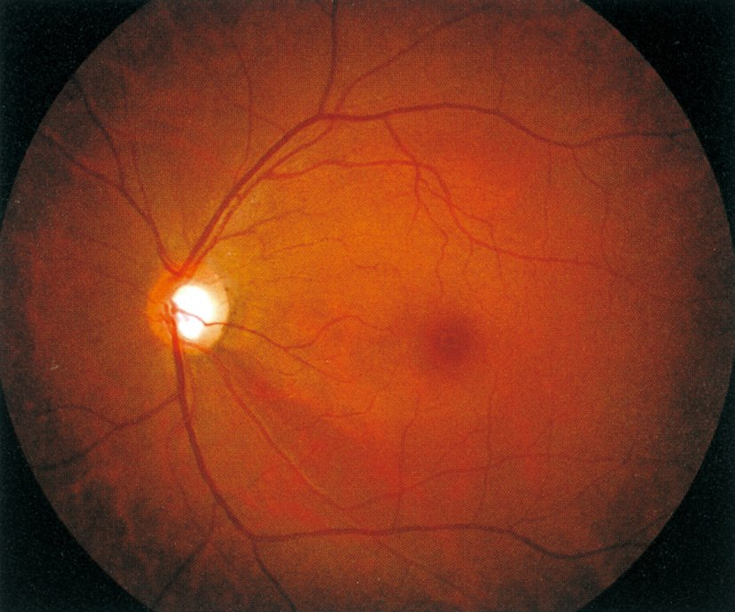
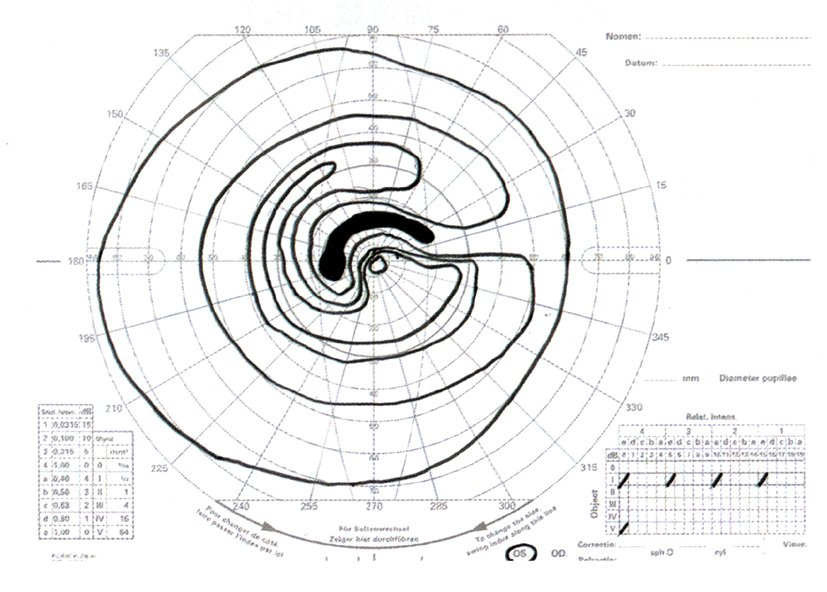
| 作用 | 薬 | 働く場所 |
|---|---|---|
| 産生を減らす | β遮断薬 炭酸脱水酵素阻害薬 α2刺激薬 | 毛様体無色素上皮 |
| ぶどう膜強膜流出を増やす | プロスタグランディン関連薬 α2刺激薬 | 毛様体筋の間隙 |
| 主流出路の流出を増やす | Rhoキナーゼ阻害薬 副交感神経刺激薬 | 線維柱帯・Schlemm管 |
| 選択肢 | 解説 |
|---|---|
| ａ 抗菌薬 | 感染性の外眼部疾患に用いる薬で、本例に感染を示す所見は無い。 |
| ◯ ｂ β遮断薬 | チモロールなどのβ遮断薬点眼は毛様体の房水産生を抑えて眼圧を下げる、長年使われてきた基本薬である——本例には喘息・徐脈・心不全といった禁忌となる全身疾患の記載が無いので安全に使える。1日1〜2回点眼、プロスタグランディン関連薬との配合剤も広く使われる。 |
| ｃ 抗アレルギー薬 | アレルギー性結膜炎のかゆみ・充血を抑える薬で、眼圧には影響しない。 |
| ◯ ｄ 炭酸脱水酵素阻害薬 | ドルゾラミド・ブリンゾラミド点眼は毛様体無色素上皮の炭酸脱水酵素Ⅱを阻害して房水産生を減らす——β遮断薬とは作用点が近いものの機序が異なるため併用で相加効果が得られる。点眼は全身への影響が小さく（内服のアセタゾラミドと違い代謝性アシドーシスや低K血症を起こしにくい）、長期投与に向く。 |
| ｅ 副腎皮質ステロイド | ステロイド点眼は線維柱帯の細胞外基質を増やして流出抵抗を上げ、ステロイド緑内障を起こす——眼圧を上げる薬であり、緑内障の治療としては選んではならない。 |
| 選択肢 | 解説 |
|---|---|
| ａ 眼 痛 | 開放隅角緑内障は眼圧上昇が緩徐で、角膜も虹彩も適応してしまうため痛みを生じない。眼痛が出るのは急性閉塞隅角緑内障発作や角膜疾患・ぶどう膜炎・強膜炎である。 |
| ｂ 視力低下 | 緑内障で最後まで残るのが中心視野＝視力である——弓状線維束が黄斑を避けて走るため、視野が大きく欠けても視力1.0が保たれる。視力低下は末期の所見で、「病初期」という限定に反する。 |
| ｃ 角膜浮腫 | 角膜内皮のポンプ能を上回る急激な高眼圧で生じる所見で、急性閉塞隅角緑内障発作の像である。開放隅角緑内障では角膜は清明のままである。 |
| ｄ 虹彩萎縮 | 高眼圧による虹彩の阻血の結果で、急性発作を起こした後に緑内障斑・瞳孔散大固定とともに残る所見である。 |
| ◯ ｅ 傍中心暗点 | 固視点から10°以内のBjerrum領域に出る小さな暗点で、緑内障で最も早期に現れる視野異常である——乳頭上下極の弓状線維束のうち黄斑近くを通る線維が先に脱落するために生じる。同時期に鼻側階段や網膜神経線維層欠損〈NFLD〉もみられるが、患者はまったく自覚しない——だから健診での発見が決定的に重要になる。 |
| 箱 | 所見 |
|---|---|
| 初期（開放隅角） | 網膜神経線維層欠損〈NFLD〉／傍中心暗点／鼻側階段／乳頭リムの菲薄化・乳頭出血（すべて無自覚） |
| 進行〜末期（開放隅角） | 弓状暗点 → 輪状暗点 → 求心性視野狭窄 → 視力低下・歩行障害 |
| 急性閉塞隅角発作 | 眼痛・頭痛・悪心嘔吐・虹視・霧視／角膜浮腫・毛様充血・中等度散瞳・浅前房／発作後は虹彩萎縮・緑内障斑 |
| 病変部位 | 視野の形 | 代表疾患 |
|---|---|---|
| 網膜（周辺〜赤道部） | 輪状暗点→求心性視野狭窄 | 網膜色素変性 |
| 網膜（黄斑） | 中心暗点 | 加齢黄斑変性、黄斑円孔 |
| 視神経（乳頭上下極） | 弓状暗点・鼻側階段 | 緑内障 |
| 視神経（乳頭黄斑線維束） | 中心暗点 | 球後視神経炎、中毒性視神経症 |
| 視交叉 | 両耳側半盲 | 下垂体腺腫、頭蓋咽頭腫 |
| 視索 | 同名半盲（左右差あり） | 脳腫瘍 |
| 視放線（Meyerループ） | 同名性上四分盲 | 側頭葉病変 |
| 後頭葉 | 同名半盲（黄斑回避） | 後大脳動脈梗塞 |
| 選択肢 | 解説 |
|---|---|
| ◯ ａ 網 膜 | 輪状暗点は固視点の周囲をドーナツ状に取り巻く暗点で、中心視野と最周辺は保たれる——代表は網膜色素変性で、網膜の赤道部付近から杆体が変性するために生じる。杆体は中心窩から約20°の帯に密度のピークがあり、そこが輪状に脱落するとちょうど輪の形の暗点になる。輪状暗点はやがて広がって求心性視野狭窄となり、夜盲とあわせて網膜色素変性の三徴を成す。（進行した緑内障でも上下の弓状暗点がつながって輪状暗点になるが、その病変部位は視神経乳頭＝網膜神経節細胞の軸索であり、本問の選択肢では網膜が唯一該当する）。 |
| ｂ 視交叉 | 視交叉では鼻側網膜からの線維（＝耳側視野を担う）が交叉する——下垂体腺腫・頭蓋咽頭腫が正中から圧迫すると両耳側半盲をきたす。垂直経線で視野が切れるのが特徴で、輪状にはならない。 |
| ｃ 視放線 | 外側膝状体から後頭葉へ向かう線維で、障害されると同名半盲になる。側頭葉を回るMeyerループの障害では同名性上四分盲、頭頂葉側の障害では同名性下四分盲となる。 |
| ｄ 後頭葉 | 一次視覚野の障害で同名半盲をきたす——後大脳動脈領域の梗塞では中心窩を担う後頭極が中大脳動脈からも血流を受けるため黄斑回避を伴うことがある。 |
| ｅ 外側膝状体 | 視索からの線維がシナプスを換える中継核で、障害されると同名半盲になる。視交叉より後方の障害はすべて同名性の視野障害になる、と押さえる。 |